For the project, we picked a paper on continuous time pipeline ADCs from Prof. Y.S. Pavan’s lab at IIT Madras [6]. The focus of the project is to build a working behavioral model of the continuous time pipeline ADC implemented in the paper.
To be able to copy Joosung’s folders and vice-versa here are the following steps.
The general implementation plan in table 1.
| Component | Ideal Block | Ideal Schematic | Transistor-level Schematic | |||||||
| Delay line | Verilog-A |
| RC delay lattic | |||||||
| Flash ADC | Verilog-A |
|
|
|||||||
| R-DAC | Verilog-A NRZ DAC | todo | todo | |||||||
| Biquad |
|
|
|
|||||||
| Sampling switch |
| same |
|
|||||||
| Verilog-A or Python | None | None | |||||||
| Backend ADC |
| Joosung’s ideal schematic | Joosung’s schematics | |||||||
There are still some key details about the DAC I need to figure out. I plan to run a Python script in parallel to my ideal blocks to get an idea of what to expect for the results.
A symmetrical lattice is shown in figure 1 [18]. If we ignore \(Z_L\) (tend it to infinity) and \(Z_S\) (set it to zero), we can write the following transfer functions (and many more).
\[\frac {v_{out}}{v_{in}} = \frac {Z_a-Z_b}{Z_a+Z_b}\] \[Z_{in} = \frac {Z_a+Z_b}{2}\] \[Z_{out} = \frac {2Z_aZ_b}{Z_a+Z_b}\] \[Z_{trans} = \frac {v_{out}}{i_{in}} = \frac {Z_a-Z_b}{2}\]
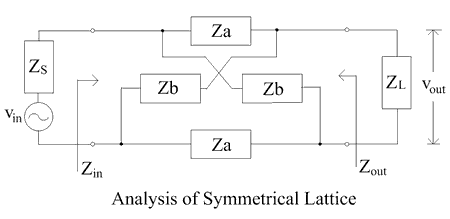
We can derive an all-pass network using such lattices. They’re also called lattice delay networks [17].
Let us start with a case where the magnitude of the all-pass network is a constant with frequency but the phase varies in some manner that we can design. We intuit that for an all pass behaviour the transfer function must look like
\[\frac {v_{out}}{v_{in}} = \frac {1-s/a}{1+s/a} = \frac {1-Z_a/Z_b}{1+Z_a/Z_b}\]
We can implement this with an RC filter if we choose \(Z_a = R_1\) and \(Z_b = 1/sC_1\). The magnitude of the trasnfer function is 1 across all frequencies and there is a linear increase in phase shift \(\phi = -2 \arctan (\omega R_1C_1)\). This corresponds to a time delay of
\[t_d (\omega ) = \frac {-2 \arctan (\omega R_1C_1)}{\omega } \approx 2R_1 C_1 \hspace {4mm} \text {when }\omega \approx \text {low frequencies}\]
for a given frequency. A group delay can also be calculated for signals containing a spectrum
\[t_{gd} = -\frac {d\phi }{d\omega } = \frac {2R_1C_1}{1+(\omega R_1C_1)^2}\]
But the above analysis assumed that there was no source and load impedance (hence, we used the transfer functions from above). It can be shown that an RC delay lattice cannot be all-pass and have no attenuation when there is a current drawn from it. [18] shows that only an LC network can do this.
In figure 1, let’s now add back \(Z_S\) and \(Z_L\) since in actual ckts we’ll have the preceeding stage’s impedance and the load from the subsequent stage. The transfer function is now given by [18]
\[H(s) = \frac {Z_L (Z_b - Z_a)}{2Z_a Z_b + (Z_S + Z_L)(Z_a + Z_b) + 2Z_S Z_L}\]
Since we want an RC delay lattice, we can see what attenuation and \(RC\) delay we can design for given \(R_S\) and \(R_L\). Rewritng the above transfer function
\[H(s) = \frac {R_L (1 - sRC)}{(2R + R_S + R_L) + sC \big [ R(R_S + R_L) + 2R_S R_L \big ]}\]
Enforcing our all-pass condition (LHP = RHZ), we get \(R=\sqrt {R_SR_L}\), and the final transfer function is
\[H(s) = \left ( \frac {R_L}{(\sqrt {R_S} +\sqrt {R_L})^2} \right ) \frac {1 - sRC}{1 + sRC}\]
The group delay is the same as the previous analysis. We can choose \(R_L\) from the Rauch filter’s design requirements in this project. I’m not sure about \(R_S\) here.
Given that we take 800 MS/s and we need a cycle delay, I set the delay to be \(t_d = 1/800\) MHz \(= 1.25\) ns [6].
1`include "constants.vams" 2`include "disciplines.vams" 3 4module ideal_all_pass_delay (vip, vim, vop, vom); 5 6 // Differential ports 7 input vip, vim; 8 output vop, vom; 9 electrical vip, vim, vop, vom; 10 11 // Desired group delay (Ts) 12 parameter real Ts = 1.25n; 13 14 analog begin 15 // Delay each side independently relative to ground. 16 V(vop) <+ absdelay(V(vip), Ts, 10n); 17 V(vom) <+ absdelay(V(vim), Ts, 10n); 18 end 19 20endmodule
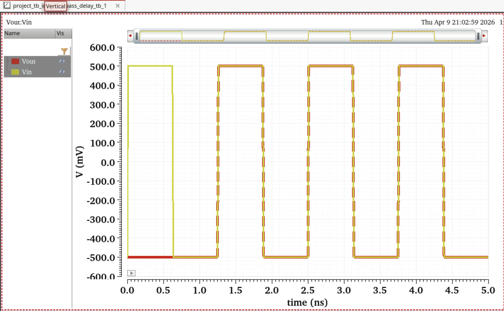
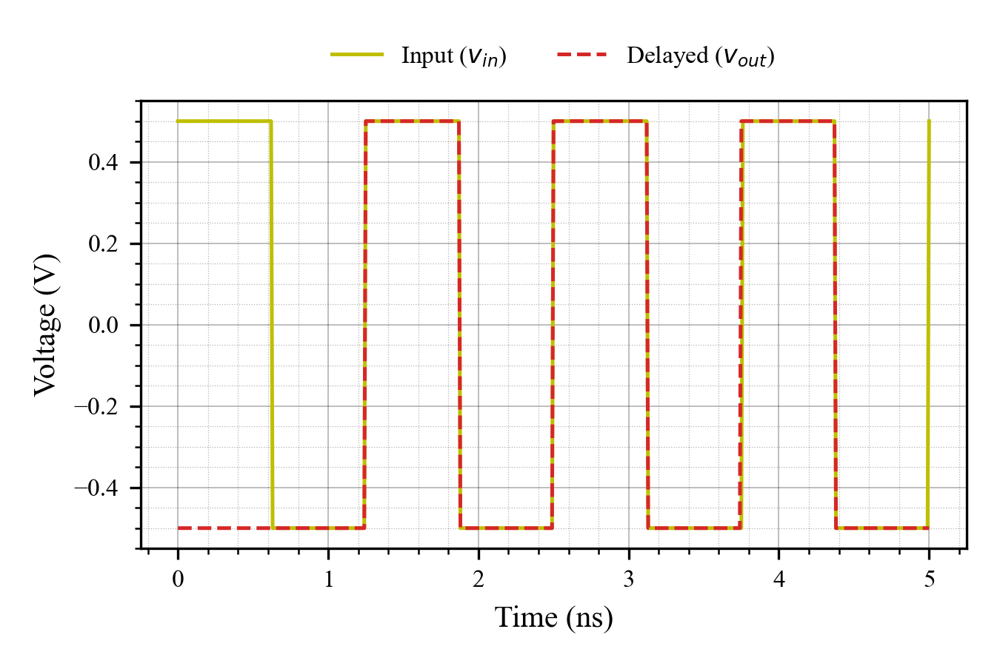
The sub-ADC within the front end of the pipeline is implemented with a mid-tread 9-level quantizer. The difference between a midrise vs. a midtread quantizer is shown below in figure 3 [11].
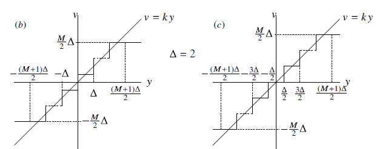
If we have 4 levels from 0V to 1V (\(V_{FS}\)), each level is 250 mV in width and the number of comparators needed is 3 since each comparator can decide whether a signal is above or below its reference level. In a single-ended case, we compare the singled ended input to each of the 3 reference values and produce a thermometer output code. Though we need 4b thermometer code to represent the output, the theoretical SQNR is that of a 2b ADC since we have only 4 levels.
What about a differential input? If the signal is at a \(V_{CM}=V_{DD}/2\) then the differential signals are \(V_{DD}/2 \pm v_{id}/2\). The differential signal (\(v{id}\)) itself can swing from \(-V_{DD}\) to \(V_{DD}\). Unlike the single ended case, we now have to accommodate \(2V_{FS}\) in the same number of levels. The quantization step increases by a factor of 2, i.e., \(v_{id}\) can only be discretized in 500 mV steps with the 4 level quantizer. The SQNR doesn’t change since both the signal and quanitization noise power have gone up by the same amount \(\times 4\).
[12] goes through how to generate the reference voltages in the differential cases. Essentially, we compare \((v_{ip}-v_{ref,p})\) vs \((v_{in}-v_{ref,n})\) using the comparators. In our case, we have 9 levels with midtread quantization. Figure 2 shows the mapping from thermometer code to binary code (two’s complement). We essentially have 3b resolution in terms of quantization steps and the MSB is used for the sign.
| \(v_{id}\) | Thermometer Code | Decimal | 4-Bit Two’s Comp |
| +1.00V | 11111111 | +4 | 0100 |
| +0.75V | 01111111 | +3 | 0011 |
| +0.50V | 00111111 | +2 | 0010 |
| +0.25V | 00011111 | +1 | 0001 |
| 0.00V | 00001111 | 0 | 0000 |
| -0.25V | 00000111 | -1 | 1111 |
| -0.50V | 00000011 | -2 | 1110 |
| -0.75V | 00000001 | -3 | 1101 |
| -1.00V | 00000000 | -4 | 1100 |
In the paper, the sub-ADC gets half a clk cycle to settle before the DAC converts it back to feed the summation node. The DAC runs on clkb.
But if there’s no sampling stage, does the continuously changing input affect the comparator decision? Once the comparator reaches its positive feedback (regerenation) stage, the inputs do not matter as much anymore (anyway any input faster than \(f_s\) will be aliased back as a lower frequency). The realization of the comparator itself has a sampling stage so we do not need a dedicated S/H stage, particularly if running at low frequencies [9].
I added a clk-to-Q delay of \(0.25T_s\). This might need to be taken into account during alignment in digital reconstruction.
1`include "constants.vams" 2`include "disciplines.vams" 3module ideal_sub_adc_clocked (vip, vim, vrefp, vrefn, clk, dout); 4 electrical [7:0] dout; 5 6 // Parameters 7 parameter real tclk = 1.25n; // Nominal clock period 8 parameter real delay_fract = 0.25; // Delay as a fraction of tclk 9 10 parameter real vth_clk = 0.5; // Clock crossing threshold voltage 11 parameter real vlogic_high = 1.0; // Logic 1 voltage 12 parameter real vlogic_low = 0.0; // Logic 0 voltage 13 parameter real tr = 10p; // Rise time 14 parameter real tf = 10p; // Fall time 15 16 // Internal variables 17 real lsb; 18 real vref_diff; 19 real vin_diff; 20 integer code; 21 real actual_tdelay; 22 23 // Expanded bit variables 24 real vbit0, vbit1, vbit2, vbit3, vbit4, vbit5, vbit6, vbit7; 25 26 analog begin 27 28 // 0. Initialize outputs and calculate actual delay at startup 29 @(initial_step) begin 30 // Initialize to mid-tread (code 0: 4 bits high, 4 bits low) 31 // This prevents a sudden -4 LSB glitch before the first clock edge 32 vbit0 = vlogic_high; 33 vbit1 = vlogic_high; 34 vbit2 = vlogic_high; 35 vbit3 = vlogic_high; 36 vbit4 = vlogic_low; 37 vbit5 = vlogic_low; 38 vbit6 = vlogic_low; 39 vbit7 = vlogic_low; 40 41 // Calculate absolute delay time once at startup 42 actual_tdelay = tclk * delay_fract; 43 end 44 45 // 1. Trigger ONLY on the rising edge of the clock 46 @(cross(V(clk) - vth_clk, +1)) begin 47 48 // Calculate the differential reference 49 vref_diff = abs(V(vrefp) - V(vrefn)); 50 51 // Fix the LSB scaling: 52 // A 9-level ADC (-4 to +4) spanning +/- (vref_diff/2) 53 // means max input of vref_diff/2 = code 4. 54 // Therefore, LSB = (vref_diff / 2) / 4 = vref_diff / 8.0 55 if (vref_diff < 1e-6) begin 56 lsb = 1e-6 / 4; 57 end else begin 58 lsb = vref_diff / 4; 59 end 60 61 vin_diff = V(vip) - V(vim); 62 code = floor((vin_diff / lsb) + 0.5); 63 64 // Clamp to 9 levels (-4 to +4) 65 if (code > 4) code = 4; 66 if (code < -4) code = -4; 67 68 // Convert to 8-bit Thermometer Code 69 vbit0 = (code > -4) ? vlogic_high : vlogic_low; 70 vbit1 = (code > -3) ? vlogic_high : vlogic_low; 71 vbit2 = (code > -2) ? vlogic_high : vlogic_low; 72 vbit3 = (code > -1) ? vlogic_high : vlogic_low; 73 vbit4 = (code > 0) ? vlogic_high : vlogic_low; 74 vbit5 = (code > 1) ? vlogic_high : vlogic_low; 75 vbit6 = (code > 2) ? vlogic_high : vlogic_low; 76 vbit7 = (code > 3) ? vlogic_high : vlogic_low; 77 end 78 79 // 2. Drive the physical outputs continuously with the calculated relative delay 80 V(dout[0]) <+ transition(vbit0, actual_tdelay, tr, tf); 81 V(dout[1]) <+ transition(vbit1, actual_tdelay, tr, tf); 82 V(dout[2]) <+ transition(vbit2, actual_tdelay, tr, tf); 83 V(dout[3]) <+ transition(vbit3, actual_tdelay, tr, tf); 84 V(dout[4]) <+ transition(vbit4, actual_tdelay, tr, tf); 85 V(dout[5]) <+ transition(vbit5, actual_tdelay, tr, tf); 86 V(dout[6]) <+ transition(vbit6, actual_tdelay, tr, tf); 87 V(dout[7]) <+ transition(vbit7, actual_tdelay, tr, tf); 88 end 89 90endmodule
The results of the Cadence and python test benches are shown in figure 4.
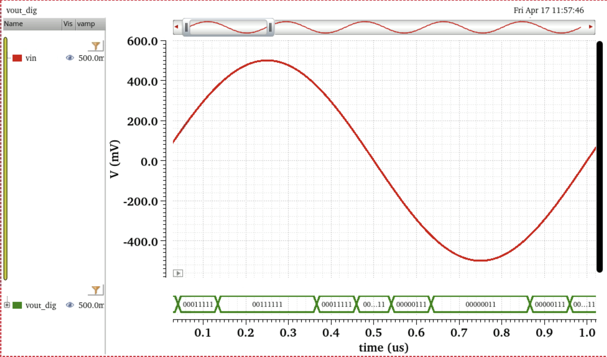
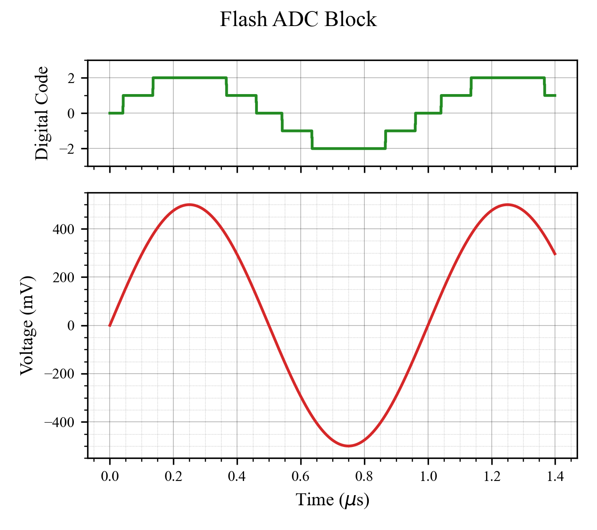
In figure 5, we verify that the ADC made its decision in the positive half of the clk cycle and it introduced a quarter cycle delay. In silicon, this would correspond to the delay from the comparator’s decision.
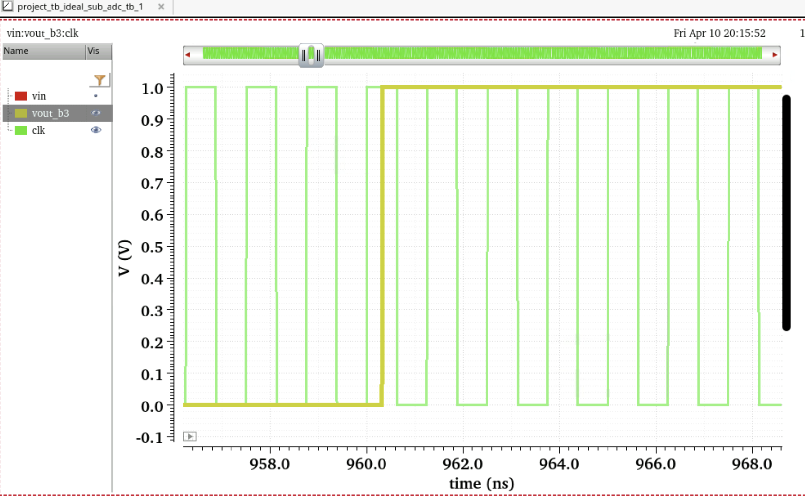
Since we have a low supply voltage, we’d like to avoid stacking tranistors or voltage boosting techniques for the comparator design. Although the cross-coupled pair is not in saturation we care about the supply voltage for the following reason [1]. In figure 6, in the StrongArm latch, at the beginning of the decision, only the devices M3 and M4 start pulling the output nodes down. The regeneration fully kicks in when the output nodes fall below sufficiently to turn on M5 and M6. If the supply voltage is lowered, the \(V_{GS}\) on these devices is lowered and it takes longer for M5 and M6 to turn on.
The double tail comparator solves this issue by separating the sampling and regeneration stages. The output nodes can now swing lower because the source of the NMOS devices of the latching stage are at GND and not the \(V_{DS}\) of the input pair. This separation also means we can have a higher tail current in the latching stage to allow for faster settling, and a smaller current in the sampling stage for lower offset [1]. I do not understand fully why the comment about offset is true (todo).
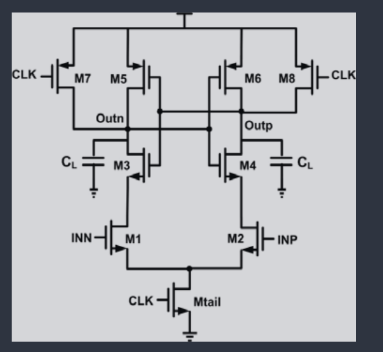
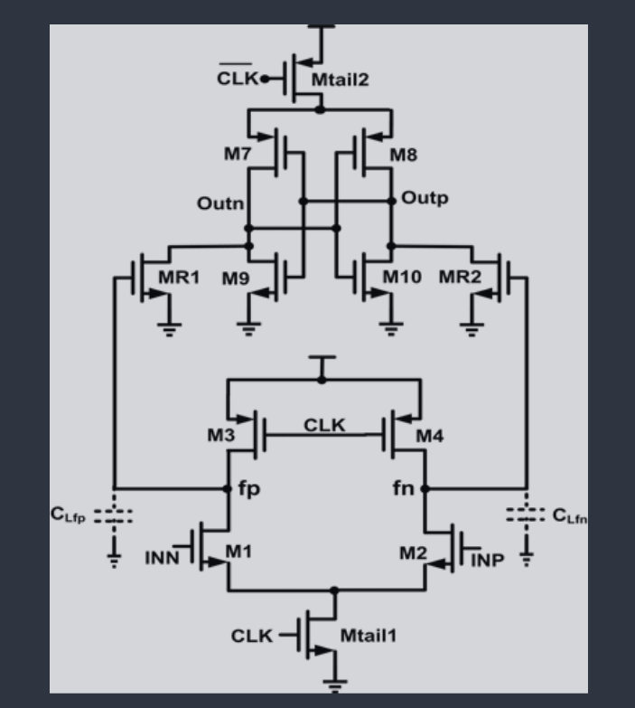
We will implement the double tail comparator for its benefits over the StrongArm such as higher sampling rates, lower kickback noise, and being able to run at lower supply voltages without increasing delay (or compromising on sampling rate).
We follow the analysis from [1]. The operation of the comparator is as follows. During the reset phase (clk low, \(M_{tail}\), \(M_{tail2}\) are off), devices M3 and M4 precharge the nodes \(f_p\) and \(f_n\) to VDD. This in turn causes the devices MR1 and MR2 to be turned on and discharge the output nodes to GND. During the decision making phase (clk is high and \(M_{tail}\), \(M_{tail2}\) are on), M3 and M4 are off and the nodes \(f_p\) and \(f_n\) start to discharge. This discharge rate has two terms - one that is directly proportional to \(I_{tail1}/C_{fnp}\) and another proportional to the differential voltage at the input pair. The difference is therefore \[\frac {d V_{fp}}{dt} = \frac {I_{tail1}/2+g_{m12}v_{d}/2}{C_{fp}} \] \[\frac {d V_{fp}}{dt} = \frac {I_{tail1}/2-g_{m12}v_{d}/2}{C_{fp}} \] \[\frac {d \Delta V_{fpn}}{dt} = \frac {g_{m12}v_d}{C_{fp}} \]
Say the time taken for the devices M9 and M10 to turn on (i.e., for \(out_p\) and \(out_n\) to rise to \(V_{th}\)) is \(t_0\). We can approximate this as [1]
\[t_0 \approx \frac {V_{thn}C_{Lout}}{I_{tail2}/2}\]
Since we know that \(I_{tail2}\) is steered by \(g_{mR12}\Delta V_{fpn}\) to be asymmetric in either branches, we can write the difference in output voltages as
\[\Delta V_{opn} \approx 2V_{thn}\frac {g_{mR12}\Delta V_{fpn}}{I_{tail2}} = 2V_{thn}\frac {g_{mR12}\Delta V_{fpn}}{I_{tail2}} \cdot t_0 \cdot \frac {g_{m12}v_d}{C_{fp}} = \biggl ( \frac {2V_{thn}}{I_{tail2}}\biggr )^2 \cdot \frac {C_{Lout}}{C_{fnp}} \cdot g_{m12}g_{mR12} \Delta v_{in}\]
We see that we want a high \(g_{mR12}\) and a high \(\Delta V_{fpn}\) to maximize this \(\Delta V_{opn}\) just before the regeneration starts, and a high \(I_{tail2}\). We can show that the regeneration delay itself (i.e., once xcoupled devices have turned on) is given by
\[t_{latch} = \frac {C_{Lout}}{g_{meff}} \cdot \ln \bigg ( \frac {V_{os}}{\Delta V_{opn}}\bigg )\]
where \(V_{os}\) is the total output swing (which [1] assumes to be \(V_{DD}/2\)) and \(g_{meff}\) is the ‘effective’ transconductance of the xcoupled devices. I’m not too sure what this effective \(g_m\) is but my guess is that increasing \(g_m\) of the individual devices in the xcoupled invereters might improve this (todo: there is a reference in [1] that might be helpful in understanding this latch delay further).
The final delay for a swing of \(V_{DD}/2\) is given by (the swing itself doesn’t matter too much since it’s inside a logarithmic function)
\[t_{delay} = t_0 + t_{latch} = 2\frac {V_{thn}C_{Lout}}{I_{tail2}} + \frac {C_{Lout}}{g_{meff}} \cdot \ln \biggl ( \frac {V_{DD} I^2_{tail2} C_{fnp}}{kV^2_{thn}C_{Lout} g_{m12} g_{mR12} \Delta V_{in}}\biggr )\]
Let’s say we have a \(V_{DD}\) of 1 V. The smallest \(\Delta V_{in}\) we need to resolve is 125 mV since this is the LSB of the coarse ADC. Since the sampling rate is 800 MS/s and we need to make a decision within half a clk cycle, we have 625 ps for the comparator output to settle.
As mentioned above, the DAC is switched half a clk cycle after the ADC to give it time to settle. The DACs in the first stage are virtual-groung-switched NRZ DACs [10]. Let’s try to understand the DAC in figure 7.
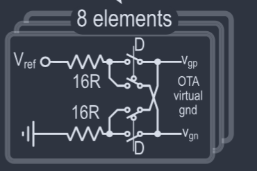
The key point here is that the DAC is connected to the virtual GND node of the filter. The output sequence can be converted to a current using a resistor as shown on the left in figure 8.
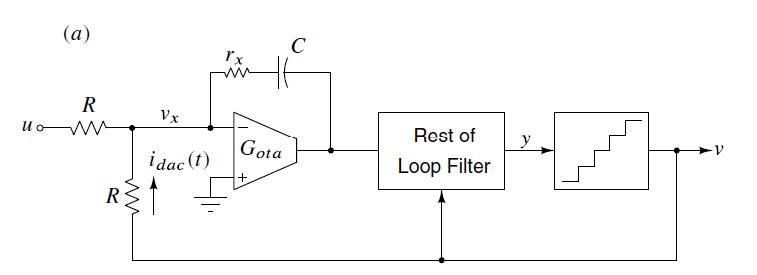
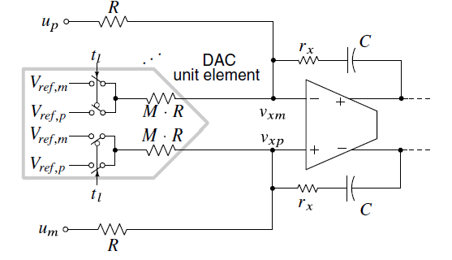
If the output of the ADC is a \(M\)-bit thermometer code, we can drive \(M\) unit elements each of resistance \(M\cdot R\) to get a full-scale current (when all \(M\) elements are on) of \(M\cdot V_{DD}/MR = V_{DD}/R\) [11]. The same idea is extended to a differential case where the resistors are switched between the two references as shown on the right in figure 8 (which is the same as figure 7 with the negative reference at GND). In the differential case, the maximum noise spectral density is given by \(4kT/R + 4kT/R\) (variances add up) and when referred to the input, we get a noise voltage PSD of \(8kTR\) [11]. It can be shown that switched-resistor DACs have the smallest noise contribution for the same full-scale current delivered. One drawback of this DAC, however, is that the resistances now load the OTA input and can cause degradation in loop-gain. This effects the linearity of the integrator in a CT-DSM and the loop filter here in the CTP.
An NRZ DAC holds the voltage corresponding to the bits that are turned on for the entire clock cycle. A RZ DAC on the other hand delivers a pulse only for half the clock cycle (with double the amplitude to keep the average energy the same/area under the curve). The NRZ DAC in our paper is clocked at the falling edge w.r.t the comparator in the flash ADC. Say the ADC is clocked at \(t=0\) and the DAC is then clocked at \(t=0.5T_{clk}\). The pulse is on till \(t=1.5T_{clk}\). We can approximate this as a delta pulse of the same magnitude at \(t=T_{clk}\). Therefore, the paper claims to have an ‘effective’ delay of \(T_{clk}\) in the flash-DAC path.
Note that we need a differential output from the DAC. So we need to give two references as shown in figure 8. On the test bench we need to make sure that the \(V_{ref}\) I have for the ADC is the full-scale \(V_{ref,p} - V_{ref,n}\) for the DAC.
1`include "constants.vams" 2`include "disciplines.vams" 3 4module ideal_dac_clocked (clkb, din, vrefp, vrefn, voutp, voutn); 5 input clkb; 6 input [7:0] din; 7 input vrefp, vrefn; 8 output voutp, voutn; 9 10 electrical clkb; 11 electrical [7:0] din; 12 electrical vrefp, vrefn; 13 electrical voutp, voutn; 14 15 // Parameters for logic thresholds and transition times 16 parameter real vth = 0.5; 17 parameter real trise = 10p; 18 parameter real tfall = 10p; 19 parameter real tdelay = 0; 20 21 real voutp_target; 22 real voutn_target; 23 integer sum; 24 25 // Added variables for proper differential scaling 26 real vref_cm; 27 real vref_diff; 28 real fraction; 29 30 analog begin 31 // Initialize outputs to Common Mode at startup to prevent glitches 32 @(initial_step) begin 33 voutp_target = (V(vrefp) + V(vrefn)) / 2.0; 34 voutn_target = (V(vrefp) + V(vrefn)) / 2.0; 35 end 36 37 // Trigger ONLY on the rising edge of clkb 38 @(cross(V(clkb) - vth, +1)) begin 39 sum = 0; 40 41 // Manually unroll the summation 42 if (V(din[0]) > vth) sum = sum + 1; 43 if (V(din[1]) > vth) sum = sum + 1; 44 if (V(din[2]) > vth) sum = sum + 1; 45 if (V(din[3]) > vth) sum = sum + 1; 46 if (V(din[4]) > vth) sum = sum + 1; 47 if (V(din[5]) > vth) sum = sum + 1; 48 if (V(din[6]) > vth) sum = sum + 1; 49 if (V(din[7]) > vth) sum = sum + 1; 50 51 // Calculate Common Mode and Differential Reference 52 vref_cm = (V(vrefp) + V(vrefn)) / 2.0; 53 vref_diff = abs(V(vrefp) - V(vrefn)); 54 55 // Map the sum (0 to 8) to a fraction (-1.0 to +1.0) 56 fraction = (sum - 4.0) / 4.0; 57 58 // Calculate the fully differential target voltages 59 // We divide vref_diff by 4.0 here so that the maximum single-ended 60 // deviation from Vcm is +/- (Vref_diff / 4). 61 // This ensures the maximum DIFFERENTIAL swing is exactly +/- (Vref_diff / 2). 62 voutp_target = vref_cm + (fraction * (vref_diff / 2.0)); 63 voutn_target = vref_cm - (fraction * (vref_diff / 2.0)); // changed this back to 2 64 end 65 66 // Continuously drive the differential outputs 67 V(voutp) <+ transition(voutp_target, tdelay, trise, tfall); 68 V(voutn) <+ transition(voutn_target, tdelay, trise, tfall); 69 end 70 71endmodule
The results are shown in figure 9.
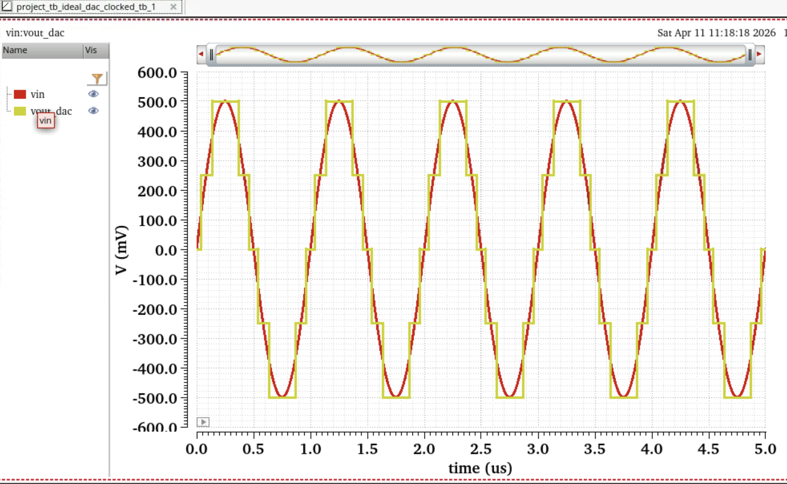
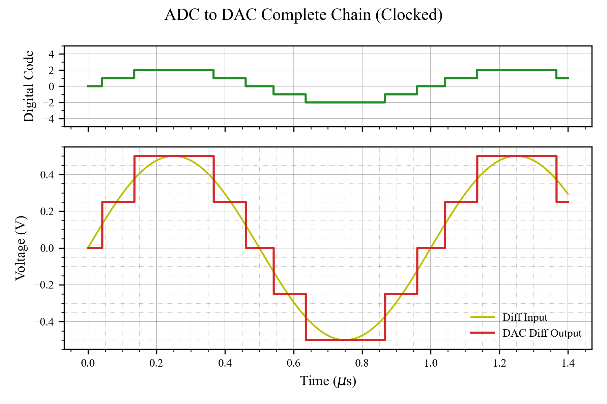
The figure 10 shows that the DAC is clocked at the falling edge of the clk. Need to figure out how to do it in hardware - some kind of DFF (or C2MOS latch?).
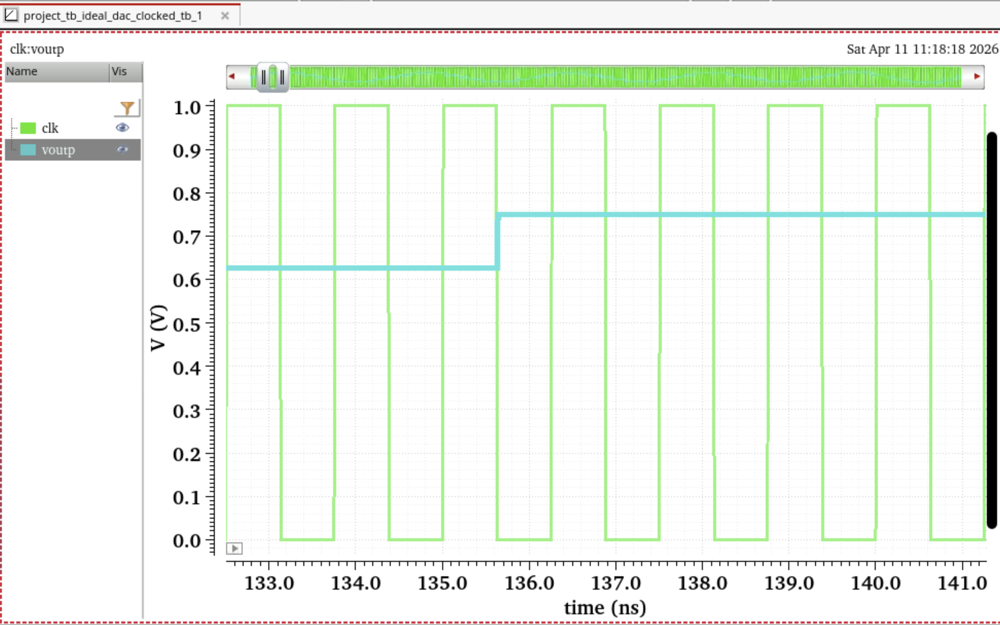
The paper implemented a DC gain of 4, maximally flat biquad with cut-off frequency at 110 MHz.
The biquad we’re interested in is of the form [15]
\[H(s) = \frac {K.\omega ^2_n}{s^2+\frac {\omega _n}{Q}s+\omega ^2_n}\]
where \(K\) is the pass band gain, \(\omega _n\) is the natural frequency, and \(Q\) is the quality factor. As \(Q\) tends to infinity, we get an oscillator as the poles are now at \(\pm \omega _n\). A larger \(Q\) can, however, be useful in getting a steepr drop-off in the transition region from pass band to stop band for the same order. The trade-off is, of course, stability of the filter. We get a maximally flat response (Butterworth filter) when \(Q=1/\sqrt {2}\) and the cut-off frequency matches \(\omega _n/2\pi \).
The function laplace_nd can be used to implement a filter with a polynominal of any order in the numerator and the denominator [4].
1`include "constants.vams" 2`include "disciplines.vams" 3 4`include "constants.vams" 5`include "disciplines.vams" 6 7module ideal_biquad (v_inp, v_inn, v_outp, v_outn); 8 9 input v_inp, v_inn; 10 output v_outp, v_outn; 11 electrical v_inp, v_inn, v_outp, v_outn; 12 13 parameter real gain = 4; 14 parameter real fc = 110e6; 15 16 real wo, Q; 17 // Declare arrays for Laplace coefficients 18 real num[0:0]; 19 real den[0:2]; 20 21 // Add this declaration at the top with your variables 22 electrical n_diff; 23 24 analog begin 25 @(initial_step) begin 26 wo = 2 * `M_PI * fc; 27 Q = 1.0 / sqrt(2.0); 28 29 num[0] = gain * pow(wo, 2); 30 den[0] = pow(wo, 2); 31 den[1] = wo / Q; 32 den[2] = 1.0; 33 end 34 35 // 1. Calculate the Laplace transfer function on an internal single-ended node 36 V(n_diff) <+ laplace_nd(V(v_inp, v_inn), num, den); 37 38 // 2. Split the result perfectly across the differential outputs 39 V(v_outp) <+ V(n_diff) / 2.0; 40 V(v_outn) <+ -V(n_diff) / 2.0; 41 end 42endmodule
The results from the Cadence and Python test benches for the AC behaviour of the biquad are shown in figure 11.
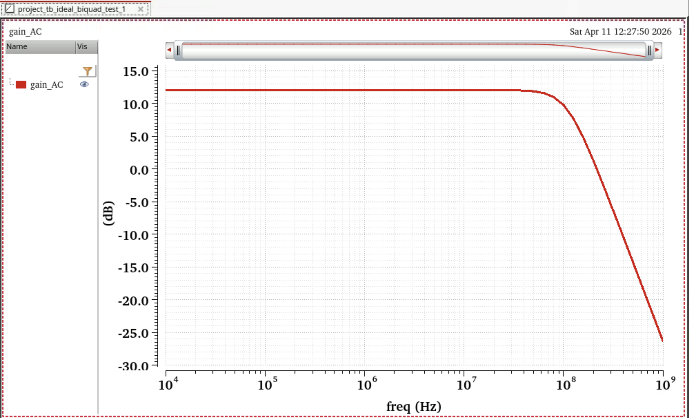
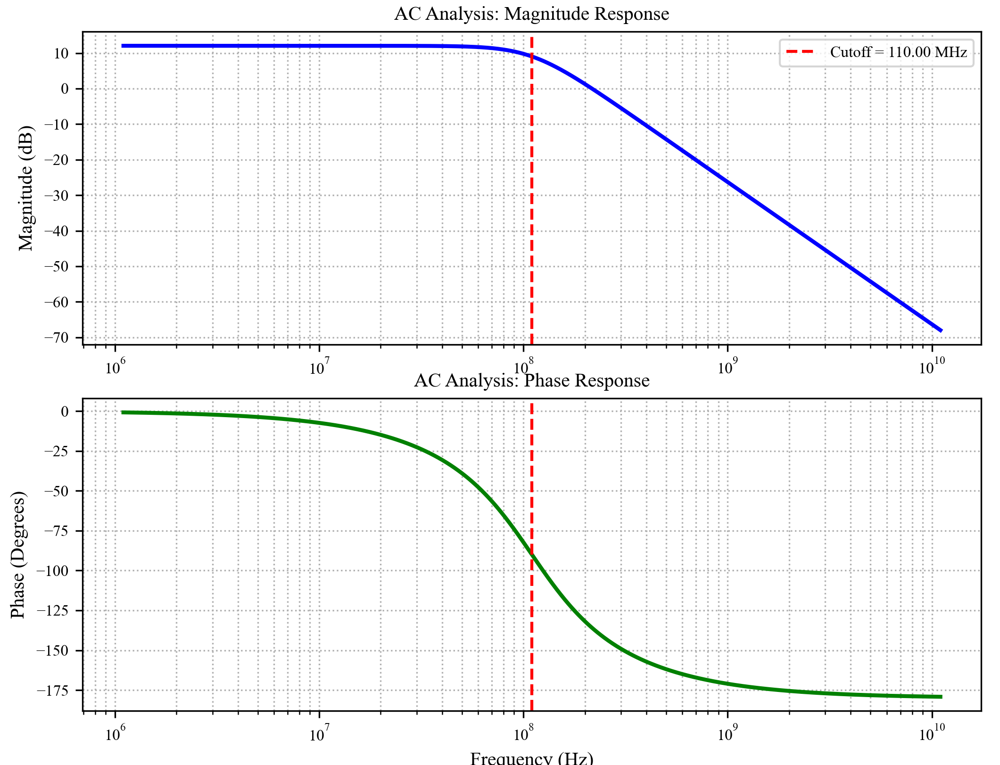
Since all the blocks are driving voltages, we can’t short them together in Cadence. Instead, we implement an ideal summation block (that actually takes the differenc here).
1`include "constants.vams" 2`include "disciplines.vams" 3 4module ideal_summation (v_inp_dl, v_inn_dl, v_inp_dac, v_inn_dac, v_outp, v_outn); 5 6 // Inputs from Track & Hold and DAC 7 input v_inp_dl, v_inn_dl; 8 input v_inp_dac, v_inn_dac; 9 10 // Output Residue 11 output v_outp, v_outn; 12 electrical v_inp_dl, v_inn_dl, v_inp_dac, v_inn_dac, v_outp, v_outn; 13 14 electrical n_diff; // Internal node to prevent floating outputs 15 16 analog begin 17 // 1. Calculate the differential subtraction: V_th - V_dac 18 V(n_diff) <+ V(v_inp_dl, v_inn_dl) - V(v_inp_dac, v_inn_dac); 19 20 // 2. Split the result perfectly across the outputs (0V Common Mode) 21 V(v_outp) <+ V(n_diff) / 2.0; 22 V(v_outn) <+ -V(n_diff) / 2.0; 23 end 24 25endmodule
We won’t need a summer in the actual blocks since we just sum currents. We need to change the polarity of the outputs, however.
I used the same sample and hold stage from HW3 but reduced the capacitances by a factor of 100 to decrease any attenuation in signal level.
Till Joosung gives me his model, I will use an ideal ADC model with 7b resolution and clocked at 800 MHz. This one has binary two’s complement output instead of thermometer code.
1`include "constants.vams" 2`include "disciplines.vams" 3 4module ideal_be_adc(vip, vim, vrefp, vrefn, clk, dout); 5 input vip, vim, vrefp, vrefn, clk; 6 output [6:0] dout; 7 8 electrical vip, vim, vrefp, vrefn, clk; 9 electrical [6:0] dout; 10 11 // Output logic level definitions 12 parameter real vlogic_high = 1.0; 13 parameter real vlogic_low = 0.0; 14 15 // Clock threshold and timing parameters 16 parameter real vtrans_clk = 0.5; 17 parameter real tdel = 0.0; 18 parameter real trise = 10p; 19 parameter real tfall = 10p; 20 21 integer code; 22 integer i; 23 24 // Internal real array to hold the target voltages 25 real vout_val [0:6]; 26 27 real vin_diff; 28 real vref_diff; 29 real lsb; 30 31 analog begin 32 // 1. Initialization 33 @(initial_step) begin 34 code = 0; // Default to mid-scale (0V differential = code 0 in 2's Comp) 35 for (i = 0; i < 7; i = i + 1) begin 36 if ((code & (1 << i)) != 0) 37 vout_val[i] = vlogic_high; 38 else 39 vout_val[i] = vlogic_low; 40 end 41 end 42 43 // 2. Sample on the rising edge of the clock 44 @(cross(V(clk) - vtrans_clk, +1)) begin 45 vin_diff = V(vip) - V(vim); 46 47 // Calculate the differential reference 48 vref_diff = abs(V(vrefp) - V(vrefn)); 49 50 if (vref_diff > 1e-6) begin 51 // FIX: Total differential span is 2 * vref_diff (from -vref to +vref). 52 // LSB = (2 * vref_diff) / 128.0 => vref_diff / 64.0 53 lsb = vref_diff / 64.0; 54 55 // Directly convert the differential voltage to a signed code centered at 0 56 // We use floor(... + 0.5) to round to the nearest integer 57 code = floor((vin_diff / lsb) + 0.5); 58 59 // Clamp to 7-bit Two's Complement bounds (+63 to -64) 60 if (code > 63) code = 63; 61 if (code < -64) code = -64; 62 end else begin 63 code = 0; 64 end 65 66 // Update real variables using binary masking 67 // Since Verilog integers are signed 32-bit, this naturally extracts 68 // the exact 7-bit Two's Complement sequence for negative numbers. 69 for (i = 0; i < 7; i = i + 1) begin 70 if ((code & (1 << i)) != 0) begin 71 vout_val[i] = vlogic_high; 72 end else begin 73 vout_val[i] = vlogic_low; 74 end 75 end 76 end 77 78 // 3. Drive the electrical pins 79 V(dout[0]) <+ transition(vout_val[0], tdel, trise, tfall); 80 V(dout[1]) <+ transition(vout_val[1], tdel, trise, tfall); 81 V(dout[2]) <+ transition(vout_val[2], tdel, trise, tfall); 82 V(dout[3]) <+ transition(vout_val[3], tdel, trise, tfall); 83 V(dout[4]) <+ transition(vout_val[4], tdel, trise, tfall); 84 V(dout[5]) <+ transition(vout_val[5], tdel, trise, tfall); 85 V(dout[6]) <+ transition(vout_val[6], tdel, trise, tfall); 86 end 87endmodule
Results from the testbench are in figure 12.
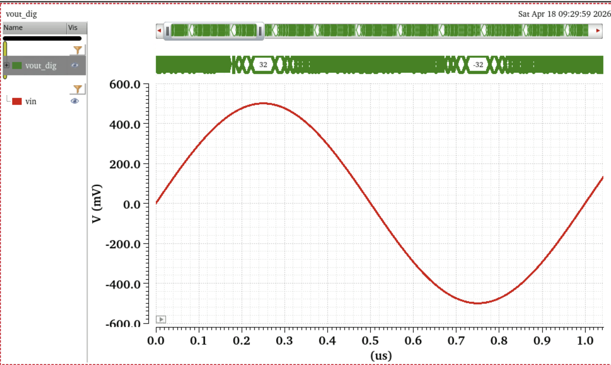
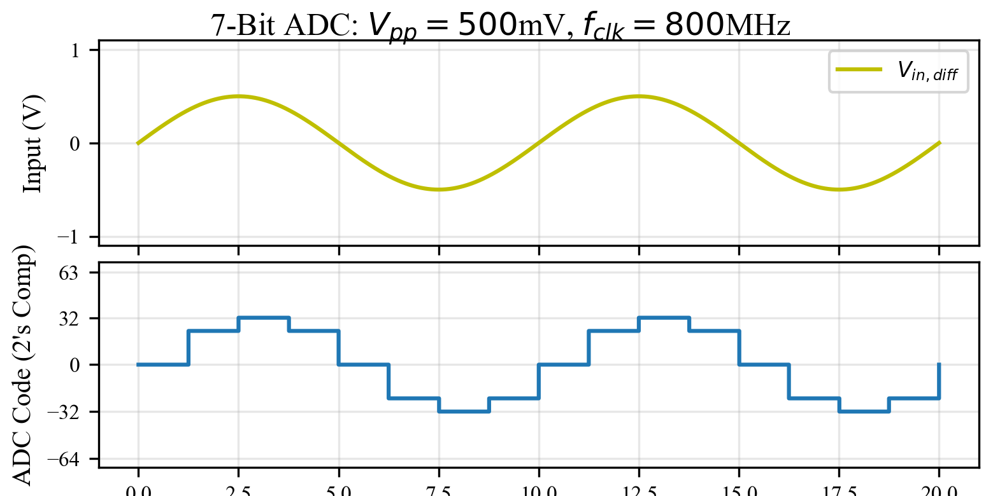
[2] describes the design of the Digtial Reconstruction Filter (DRF). Figure 13 shows the block diagram of a single stage CTP with the DRF. A standard quantizer has the following model
\[v[n] = y(nT_s) + q[n]\]
where \(y(nT_s)\) is the sampled input nd \(q[n]\) is the quantization noise. The DAC output for a sequence \(v[n]\) and with a transfer function \(p(t)\) is given by
\[v(t) = \sum _{n}^{} v[n] \, p(t-nT_s) = v_1(t) \star p(t)\]
where \(v_1(t)\) is the CT function of an input sequence \(v[n]\) and is given by \(v_1(t) = \sum _{n}^{} v[n] \delta (t-nT_s)\).
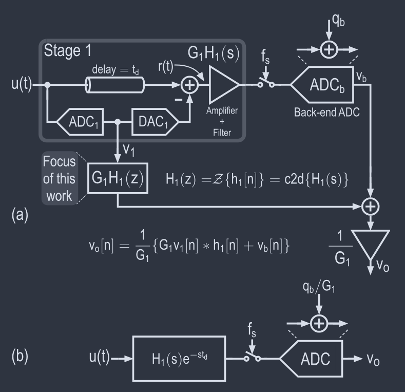
Say we now have an input \(u(t)\) to the CTP in figure 13. The input of the residue amplifier is simply \(u(t-t_d)\) where \(t_d\) is the delay introduced by the delay line, and the coarse approximation through the ADC\(_1\)-DAC\(_1\) path. If the output of ADC\(_1\) is \(v_1[n]\) (not the intermediate \(v_1(t)\) from above), we can write
\[v_1[n] = u(nT_s) + q_1[n]\]
Assuming an NRZ DAC (\(p(t) = 1\) for the full clk cycle), we can write the output of DAC\(_1\) as
\[v_1(t) = \sum _{n}^{} v_1[n] \, p(t-nT_s) = \sum _{n}^{} (u(nT_s) + q_1[n]) \, p(t-nT_s) = \sum _{n}^{} u(nT_s) \, p(t-nT_s) + \sum _{n}^{} q_1[n] \, p(t-nT_s)\]
\(p(t)\) can also be written as \(p(t) = \text {step}(t)-\text {step}(t-T_s)\) or \(p(t) = \text {rect} \bigg (\frac {t-\frac {T_s}{2}}{T_s}\bigg )\)
At the summation node of the residual amplifier, we have
\[r(t) = u(t-t_d) - v_1(t) = u(t-t_d) - \sum _{n}^{} u(nT_s) \, \text {rect} \bigg (\frac {t-\frac {T_s}{2}}{T_s}\bigg ) - \sum _{n}^{} q_1[n] \,\text {rect} \bigg (\frac {t-\frac {T_s}{2}}{T_s}\bigg )\]
Say the biquad has the impuls response \(h_1(t)\) and a DC gain of \(G_1\). The output of this block is now
\[y_b(t) = r(t) \star G_1\cdot h_1(t)\]
The output sequence at the backend quantizer is
\[v_b[n] = y_b(nT_s) + q_b [n] = r(t) \star G_1\cdot h_1(t) |_{t=nT_s} + q_b [n] \]
The above convolution is evaluated at \(t=nT_s\). The output sequence at the backend quantizer is
\[v_b[n] = \bigg (u(t-t_d) - \sum _{k}^{} u(kT_s) \, \text {rect} \bigg (\frac {t-\frac {T_s}{2}}{T_s}\bigg ) - \sum _{k}^{} q_1[k] \,\text {rect} \bigg (\frac {t-\frac {T_s}{2}}{T_s}\bigg )\bigg ) \star G_1\cdot h_1(t) |_{t=nT_s} + q_b [n]\]
To reconstruct the true output value, we pass the sequence \(v_1[n]\) through a discrete time version of the impulse response of the filter.
\[v_{1f} [n] = v_1[n] \star G_1 h_1[n] = (u(nT_s) + q_1[n]) \star G_1 h_1[n] \]
The final output is
\[v_o [n] = \frac {1}{G_1}(v_{1f}[n] + v_b[n]) = \frac {1}{G_1} (v_1[n] \star G_1 h_1[n] + v_b[n]) \]
We can simplify this to
\[ \begin {split} v_o [n] &= u(nT_s) \star h_1[n] - \sum _{k}^{} u(kT_s) \text {rect} \bigg (\frac {t-\frac {T_s}{2}}{T_s}\bigg ) \star h_1(t) \bigg |_{t=nT_s} + u(t-t_d) \star h_1(t) \bigg |_{t=nT_s} \\ &\quad + q_1[n] \star h_1[n] - \sum _{k}^{} q_1[k] \text {rect} \bigg (\frac {t-\frac {T_s}{2}}{T_s}\bigg ) \star h_1(t) \bigg |_{t=nT_s} \\ &\quad + \frac {1}{G_1} q_b[n] \end {split} \]
While the above expression does look complicated, we make some observations to simplify it. In the expression \(\sum _{k}^{} u(kT_s) \text {rect} \bigg (\frac {t-\frac {T_s}{2}}{T_s}\bigg ) \star h_1(t) \bigg |_{t=nT_s}\), \(u{kT_s}\) is a constant. Therefore, we can pull the \(\text {rect} \bigg (\frac {t-\frac {T_s}{2}}{T_s}\bigg )\) out and convolve with \(h_1(t)\) as shown below.
\[\sum _{k}^{} u(kT_s) \text {rect} \bigg (\frac {t-\frac {T_s}{2}}{T_s}\bigg ) \star h_1(t) \bigg |_{t=nT_s} = \sum _{k}^{} u(kT_s) \cdot (\text {rect} \bigg (\frac {t-\frac {T_s}{2}}{T_s}\bigg ) \star h_1(t) \bigg |_{t=nT_s})\]
We notice that \(\text {rect} \bigg (\frac {t-\frac {T_s}{2}}{T_s}\bigg ) \star h_1(t) \bigg |_{t=nT_s}\) is just the discrete time convolution and the whole expression can be simplified to
\[\sum _{k}^{} u(kT_s) \text {rect} \bigg (\frac {t-\frac {T_s}{2}}{T_s}\bigg ) \star h_1(t) \bigg |_{t=nT_s} = \sum _{k}^{} u[n] \cdot g[n-k]\]
where \(g[n]\) is the discrete time convolution of the DAC’s and filter’s responses \(g(t) = p(t)\star h_1 (t) |_{t=nT_s} \). But we now see that the above summation is, once again, just a discrete time convolution.
\[\sum _{k}^{} u[n] \cdot g[n-k] = u[n] \star g[n] = u(nT_s) \star g[n]\]
The final output sequence expression now simplifies to
\[v_o[n] = u(nT_s) \star (h_1[n]-g[n]) + u(t-t_d) \star h_1(t) \bigg |_{t=nT_s} + q_1[n] \star (h_1[n]-g[n]) + \frac {1}{G_1} q_b[n]\]
To obtain the result in paper [2], we need to program \(h_1[n] = g[n] = g(t) = p(t)\star h_1 (t) |_{t=nT_s}\). This is accomplished in the paper by the function c2d as follows. The c2d function in MATLAB implments a zero order hold, which essentially implements an NRZ DAC as shown in figure 14 [7] [8]. Please note the table in [8] that explains when a given method is applicable.
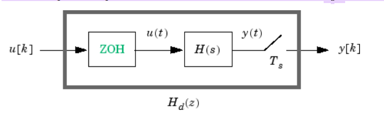
To get a discrete time equivalent of \(H(s)\), MATLAB implements an NRZ DAC to sample and hold and this is exactly our signal chain from the output of ADC\(_1\) to the resiude amplifier. Therefore, \(h_1[n]\) and \(g[n]\) cancel out yielding the following expression.
\[v_o[n] = u(t-t_d) \star h_1(t) \bigg |_{t=nT_s} + \frac {1}{G_1} q_b[n]\]
The wonderful result here shows that the quantization noise of ADC\(_1\) is cancelled by the digital reconstruction!
We need to now implement c2d(\(G_1H_1(s)\)). We use the ZOH model since we want to include the effect of the DAC’s TF. The DAC TF is given by
\[P(s) = \frac {1-\exp (_sT_s)}{s}\]
We take the inverse Laplace transform of \(G_1H_1(s)\) with \(P(s)\) sampled at \(nT_s\) and then apply the Z-transform on this sampled sequence.
\[\tilde {H}(z) = \mathcal {Z} \biggl \{ \mathcal {L}^{-1} \biggl \{\frac {1-\exp (-sT)}{s} \, G_1H_1(s) \biggr \} \bigg |_{t=nT_s} \biggr \}\]
We can simplify this
\[\tilde {H}(z) = (1-z^{-1}) \mathcal {Z} \biggl \{ \mathcal {L}^{-1} \biggl \{ \frac {G_1H_1(s)}{s} \bigg |_{t=nT_s} \biggr \} \biggr \} \]
Running c2d_biquad.py we can find \(\tilde {H}(z)\)
\[\tilde {H}(z) = \frac {0.9758 z^{-1} + 0.6455 z^{-2}}{1 - 0.8894 z^{-1} + 0.2947 z^{-2}}\]
I implemented the above IIR filter (btw it is IIR because there are poles which are not only at zero) in Cadence and tested it on Python too. The IIR filter takes in a two’s complement input so I had to make changes to the initial Verilog-A model. The Cadence results in figure 15 are currently outdated but Python is up-to-date.
1module ideal_iir_drf (clk, din, dout); 2 3 input clk; 4 input [3:0] din; 5 output [5:0] dout; 6 7 electrical clk; 8 electrical [3:0] din; 9 electrical [5:0] dout; 10 11 parameter real vth = 0.5; 12 parameter real vdd = 1.0; 13 parameter real trise = 10p; 14 parameter real tfall = 10p; 15 16 parameter real b1 = 0.97576; 17 parameter real b2 = 0.64552; 18 parameter real a1 = -0.88938; 19 parameter real a2 = 0.29470; 20 21 integer x[0:2]; 22 real y[0:2]; 23 integer y_int; 24 25 analog begin 26 @(initial_step) begin 27 x[0] = 0; x[1] = 0; x[2] = 0; 28 y[0] = 0.0; y[1] = 0.0; y[2] = 0.0; 29 end 30 31 @(cross(V(clk) - vth, +1)) begin 32 33 x[2] = x[1]; 34 x[1] = x[0]; 35 y[2] = y[1]; 36 y[1] = y[0]; 37 38 // 1. Two's Complement Input Parsing 39 // Add positive weights for bits 0, 1, and 2 40 x[0] = (V(din[2]) > vth ? 4 : 0) + 41 (V(din[1]) > vth ? 2 : 0) + 42 (V(din[0]) > vth ? 1 : 0); 43 44 // Subtract weight if MSB (Sign bit) is 1 45 if (V(din[3]) > vth) begin 46 x[0] = x[0] - 8; 47 end 48 49 // 2. Difference Equation 50 y[0] = (b1 * x[1]) + (b2 * x[2]) - (a1 * y[1]) - (a2 * y[2]); 51 52 // 3. Quantize and clamp to 6-bit SIGNED range (-32 to +31) 53 y_int = y[0]; 54 if (y_int > 31) y_int = 31; 55 if (y_int < -32) y_int = -32; 56 end 57 58 // 4. Drive Output (Bitwise operations in Verilog automatically handle 2's comp for negative integers) 59 V(dout[0]) <+ transition((y_int & 1) ? vdd : 0, 0, trise, tfall); 60 V(dout[1]) <+ transition((y_int & 2) ? vdd : 0, 0, trise, tfall); 61 V(dout[2]) <+ transition((y_int & 4) ? vdd : 0, 0, trise, tfall); 62 V(dout[3]) <+ transition((y_int & 8) ? vdd : 0, 0, trise, tfall); 63 V(dout[4]) <+ transition((y_int & 16) ? vdd : 0, 0, trise, tfall); 64 V(dout[5]) <+ transition((y_int & 32) ? vdd : 0, 0, trise, tfall); 65 end 66endmodule
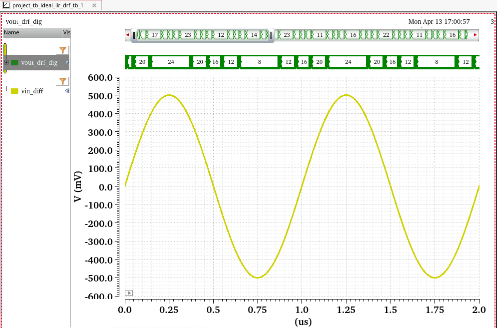
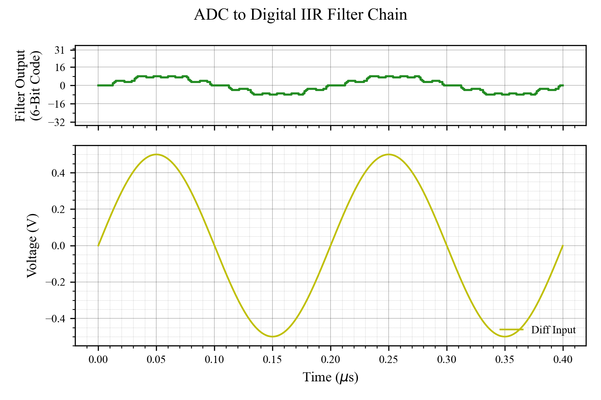
\(G_1H_1[z]\) is an IIR filter ideally but we can only implement FIR filters in HW [2]. Figure 16 shows an FIR filter in its standard form and an alternate lattice form [16]. Each coefficient \(b_n\) is finite and the filter involves no feedback (inherently stable) unlike an IIR filter.
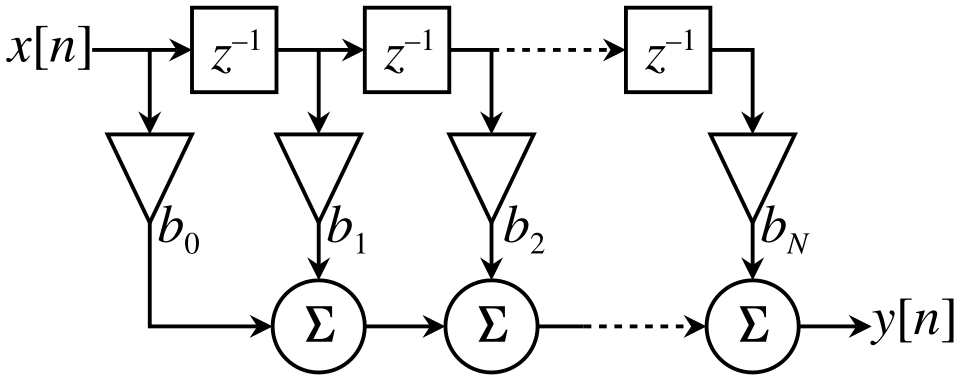
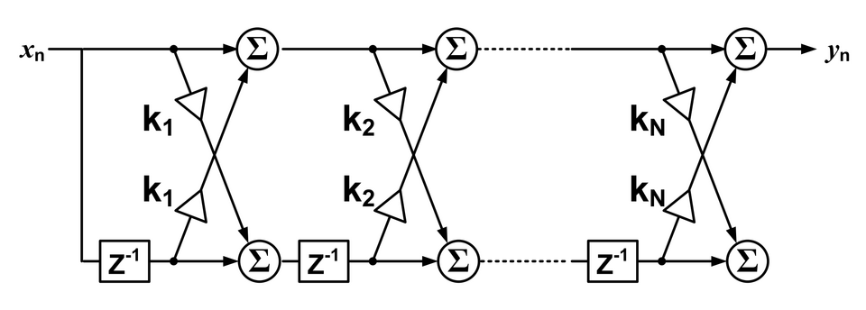
The impulse response of a (causal) FIR filter is then
\[h[n] = \sum _{i=0}^{N} b_i \cdot \delta [n-i] \hspace {4mm} \forall \, 0 \geq n \leq N\]
Taking it’s Z-transform, we get
\[\tilde {H}(z) = \sum _{i=0}^{N} b_i \cdot z^{-i} = \frac {b_0 z^N + b_1 z^{N-1} + \cdots + b_N}{z^N}\]
We see that the transfer function has \(N\) poles at z=0 and the numerator gives \(N\) zeros. We can have complex zeros but they must come in complex conjugates if we insist all \(b_i\) be real. Note that in IQ-mixing, we can use complex coefficients too. Let’s take a simple example to derive some intuitions [5].
In the z-plane, z=1 corresponds to DC or \(f_s\) and z=-1 to \(f_s/2\). We can traverse the circle and see that \(z=\pm i\) correspond to \(f_s/4\) and \(3f_s/4\) respectively. If we want a LPF, we need to kill high frequency gain so we want a zero in the LHP (not to be confused with LHP on s-plane!). Let’s look at an example with a 2-tap FIR filter and study it’s magnitude and phase response as a function of coefficients.
\[\tilde {H_2}(z) = \frac {b_0z + b_1}{z}\]
\[|\tilde {H_2}(z)| = \sqrt {b^2_0 + b^2_1 +2b_0b_1 \cos (\omega /f_s)}\]
\[\arg \tilde {H_2}(z) = \arctan \bigg (\frac {b_1 \sin (\omega /f_s)}{b_0 + b_1 \cos (\omega /f_s)} \bigg )\]
The zero is located at \(z=-b_1/b_0\). For the magnitude of the TF to be less than 1, we want \(|b_0| + |b_1| \leq 1\) and we can extend this to N-tap filters too.
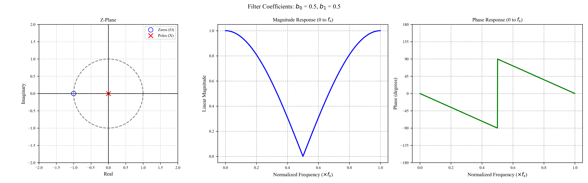
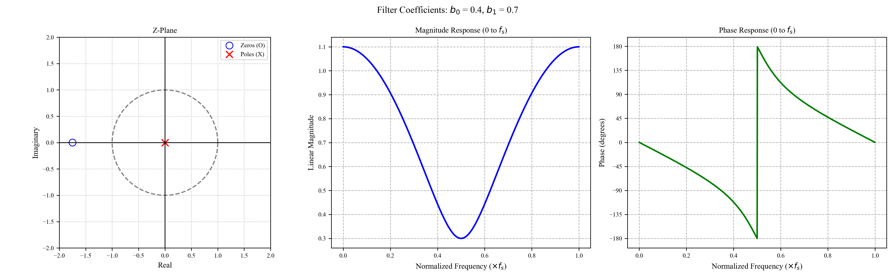
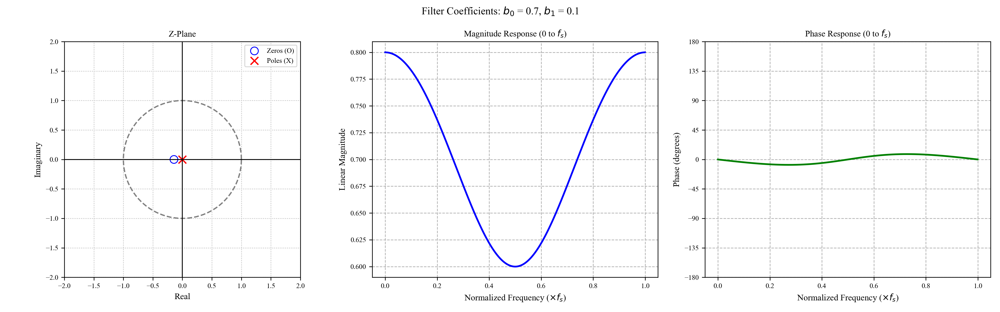
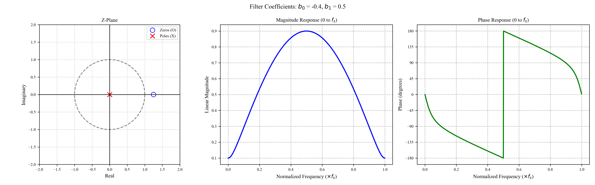
From figur 17, we see that when \(b_0\) and \(b_1\) have the same sign, we get a low-pass filter (zero is on the LHP) and for opposite signs, we get a high-pass filter (zero is on the RHP).
So far looks like the zeros of the transfer function steal the show. [5] comments on how the poles affect the magnitude.
FIR filter with symmetric coefficients can give low-pass filters and are called type-1 FIR filters [3]. A couple of results are plotted in figure 18.
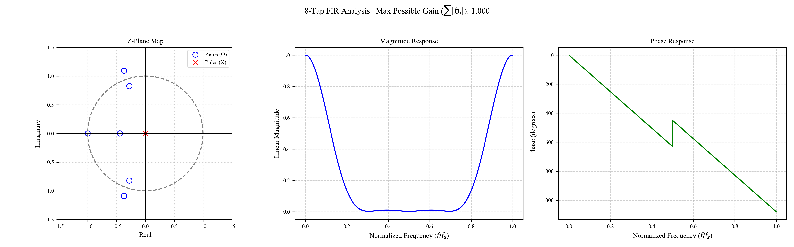
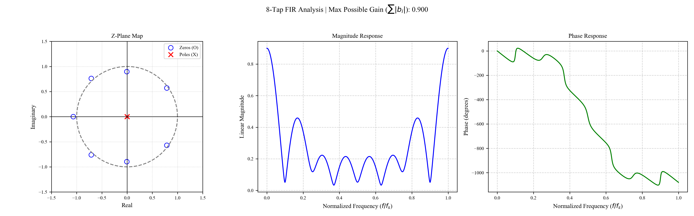
We need to convert the thermometer code output to binary so that the sub-ADC’s output can be processed by the IIR filter and added to the backend ADC. Since the input is bipolar, we need a Two’s complement version to represent the input. I implented a simple encoder in Verilog-A.
1`include "constants.vams" 2`include "disciplines.vams" 3 4module therm_to_bin_8_4_signed(tin, bout); 5 input [7:0] tin; 6 output [3:0] bout; 7 8 electrical [7:0] tin; 9 electrical [3:0] bout; 10 11 parameter real vtrans = 0.5; 12 parameter real vhigh = 1.0; 13 parameter real vlow = 0.0; 14 parameter real trise = 10p; 15 parameter real tfall = 10p; 16 17 integer count; 18 integer signed_count; 19 integer bin_code; 20 real vout_val [0:3]; 21 22 analog begin 23 // 1. Count the number of 'high' thermometer bits (0 to 8) 24 count = 0; 25 if (V(tin[0]) > vtrans) count = count + 1; 26 if (V(tin[1]) > vtrans) count = count + 1; 27 if (V(tin[2]) > vtrans) count = count + 1; 28 if (V(tin[3]) > vtrans) count = count + 1; 29 if (V(tin[4]) > vtrans) count = count + 1; 30 if (V(tin[5]) > vtrans) count = count + 1; 31 if (V(tin[6]) > vtrans) count = count + 1; 32 if (V(tin[7]) > vtrans) count = count + 1; 33 34 // 2. Centering for Mid-Tread (maps 0:8 range to -4:+4 range) 35 signed_count = count - 4; 36 37 // 3. Convert to 4-bit Two's Complement bit pattern 38 // Adding 16 to negative numbers creates the correct wrap-around 39 // bit pattern for bitwise masking (e.g., -1 becomes 15, which is 4'b1111) 40 if (signed_count < 0) begin 41 bin_code = signed_count + 16; 42 end else begin 43 bin_code = signed_count; 44 end 45 46 // 4. Map the integer bit pattern to binary voltages 47 vout_val[0] = ((bin_code & 1) != 0) ? vhigh : vlow; // Bit 0 (LSB) 48 vout_val[1] = ((bin_code & 2) != 0) ? vhigh : vlow; // Bit 1 49 vout_val[2] = ((bin_code & 4) != 0) ? vhigh : vlow; // Bit 2 50 vout_val[3] = ((bin_code & 8) != 0) ? vhigh : vlow; // Bit 3 (MSB/Sign) 51 52 // 5. Drive the output pins smoothly 53 V(bout[0]) <+ transition(vout_val[0], 0, trise, tfall); 54 V(bout[1]) <+ transition(vout_val[1], 0, trise, tfall); 55 V(bout[2]) <+ transition(vout_val[2], 0, trise, tfall); 56 V(bout[3]) <+ transition(vout_val[3], 0, trise, tfall); 57 end 58endmodule
Going back to the equation for the final, processed output sequence,
\[v_o[n] = u(t-t_d) \star h_1(t) \bigg |_{t=nT_s} + \frac {1}{G_1} q_b[n]\]
we see that the effective resolution depends on the backend ADC and the gain of the residue amplifier. Say the backend ADC has \(B_2\) bits. The quantization noise of the backend amplifier is bounded by \(\pm V_{FS}/2^{B_2}\). Thanks to the gain from the amplifier, the final output has a lower quantization noise and has an effective resolution of \(B_2 + \log _2(N)\). [13] goes through the derivation. The first stage’s resolution only sets the maximum gain that the residue amplifier can have (higher resolution of the sub-ADC means we can have a higher gain on the filter before it saturates the input of the backend ADC) [14]. In our case, this corresponds to an output with \(128 \times 4 = 512\) levels, or 9-bit output.
We have the following signal chain - a 9-level sub-ADC with a differential LSB of \(V_{FS}/4\), a DAC with the same LSB as the sub-ADC, a BE ADC with differential LSB \(V_{FS}/64\) width, and a biquad and digital IIR filters with a gain of 4. To add two binary sequences, we need to make sure that their LSBs physically represent the same value. The 6b output of the IIR filter still has \(V_{FS}/8\) (or \(V_{FS}/4\) differentially) the LSB. The BE ADC has an LSB of \(V_{FS}/128\). To align the outputs, we have to left shift the IIR filter output by 4 and then add.
\[G_1 \cdot v_o[n] = G_1 \cdot ( u(t-t_d) \star h_1(t) \bigg |_{t=nT_s} ) + q_b[n]\]
means that we can right shift the 6b output by 2 (since \(G_1=4\)) and then add to 7b output from the backend.
\[f \begin {array}{rcccccccccl} & \text {MSB} & & & & & & & \text {LSB} & \\ \text {Filtered FE (6-bit)} & F_5 & F_4 & F_3 & F_2 & F_1 & F_0 & 0 & 0 & 0 & (\times 2^3) \\ \text {Backend ADC (7-bit)} & + & &B_6 & B_5 & B_4 & B_3 & B_2 & B_1 & B_0 \\ \hline \text {Final Result (9-bit)} & D_8 & D_7 & D_6 & D_5 & D_4 & D_3 & D_2 & D_1 & D_0 & \end {array} \]
[13] shows that the redundancy we get actually helps correct any errors due to comparator offsets in the sub-ADC in the DT pipeline case.
Let’s start with the rising clk edge at clk cycle 0 and trace when the outputs from different blocks are valid and what are they quantizing exactly. At the posedge of clk 0, the input \(u(t)\) is quantized by the sub-ADC. The sampling phase starts at the posedge and there is a clk-to-Q delay (which is currently set to \(0.25 T_{clk}\)) after which the comparator makes the decision. The decision is immediately relayed to the DAC. The DAC turns on at clkb - need to figure out how to get it to trigger at the posedge of clkb, maybe register the sub-ADC output? The sub-ADC’s output is registered so that the quantized value is valid at posedge of clk cycle 1. The DAC is give half a clk cycle to settle. So once the sub-ADC’s output drives the DAC at clkb, the subtraction happens starting from posedge of clk cycle 1. The input that the sub-ADC quantized is thus, delayed by a clk cycle so that the resiude generated is relevant to the data at clk 0 posedge. The residue for \(u(t-t_d)\) is generated from clk 1 posedge to the end of that clk cycle. The BE ADC (or the next stage) now quantizes this value at the posedge of clk 2.
| Clk cycle | Edge | Action | Output Valid | |||||||
| 0 | R | Coarse-ADC samples |
|
|||||||
| 0 | F | DAC samples |
|
|||||||
| 1 | R | Residue generation |
|
|||||||
| 2 | R |
|
|
|||||||
All the ideal blocks work independetly and have been tested on Cadence and python. The output of a single stage from Cadence and python is shown figure 19.
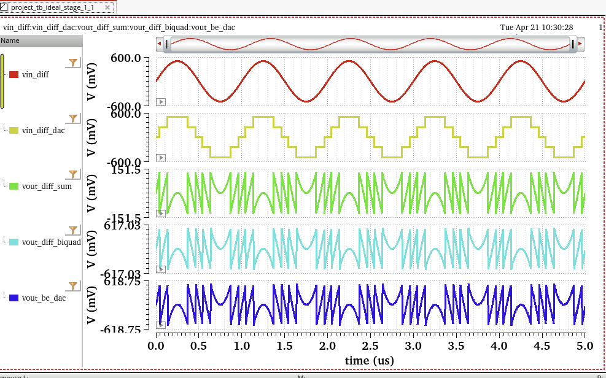
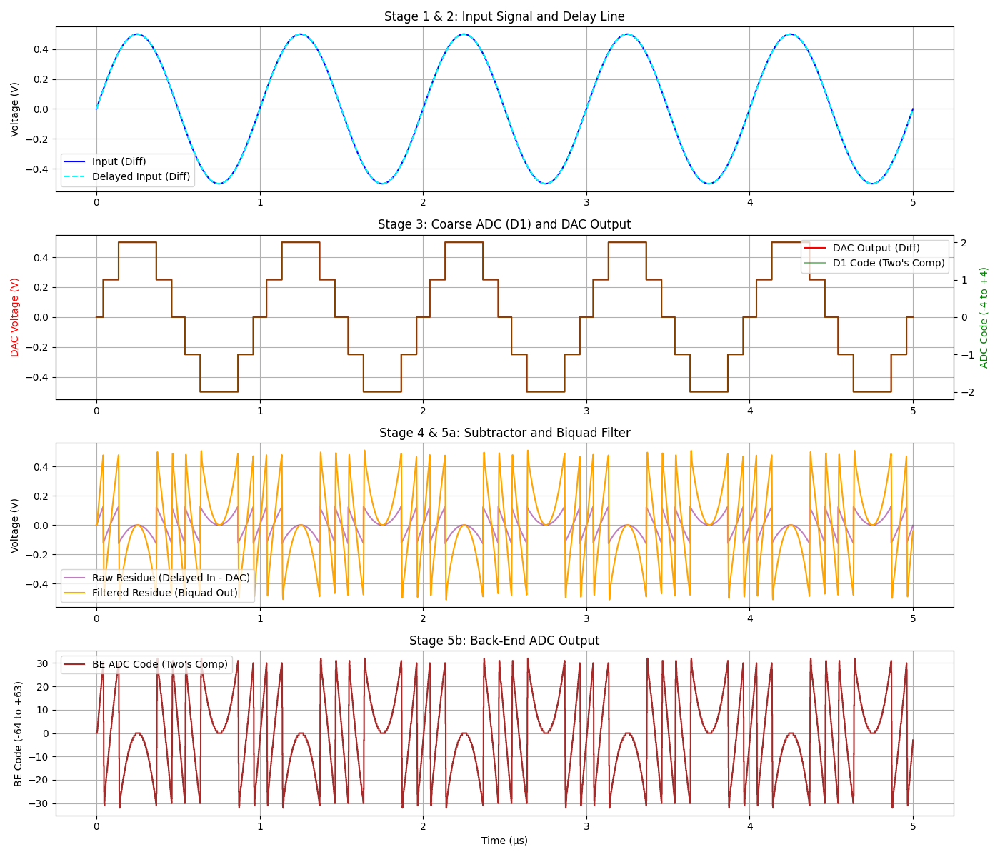
Any mismatch on clocks was adjusted in the digital reconstruction on Python.
The output of the single stage is a 9b digital code. How do we get the spectrum from this? We need to convert the code to a continuous time analog output and then take the FFT of that. For that I build another 9b DAC to convert the code to a differential output and test the first-stage’s performance.
1cv = dbOpenCellViewByType("<LIBRARY_NAME>" "<CELL_NAME>" "symbol" "schematicSymbol" "a") 2dbReplaceProp(cv "instNamePrefix" "string" "<NEW_PREFIX>") 3dbCheck(cv) 4dbSave(cv) 5dbClose(cv)
Samaneh Babayan-Mashhadi and Reza Lotfi. “Analysis and Design of a Low-Voltage Low-Power Double-Tail Comparator”. In: IEEE Transactions on Very Large Scale Integration (VLSI) Systems 22.2 (Feb. 2014), pp. 343–352. issn: 1557-9999. doi: 10.1109/TVLSI.2013.2241799. url: https://ieeexplore.ieee.org/abstract/document/6459609 (visited on 04/27/2026).
Nishanth Basavaraj and Shanthi Pavan. “Digital Reconstruction in Continuous-Time Pipelined Analog-to-Digital Converters”. In: IEEE Transactions on Circuits and Systems I: Regular Papers 70.12 (Dec. 2023), pp. 5086–5097. issn: 1558-0806. doi: 10.1109/TCSI.2023.3318694. url: https://ieeexplore.ieee.org/document/10285501 (visited on 04/03/2026).
Rudolf Brigola. Fourier Analysis and Distributions: A First Course with Applications. Springer Science & Business Media, 2013. isbn: 978-1-4614-7711-2. doi: 10.1007/978-1-4614-7711-2.
Dan Fitzpatrick and Ira Miller. Analog Behavioral Modeling with the Verilog-A Language. Boston: Kluwer Academic Publishers, 1998. isbn: 978-0-7923-8115-0.
Kevin Fronczak. Z-Domain Analysis. https://kevinfronczak.com/blog/z-domain-analysis. Accessed: 2026-04-10. July 2020.
Saravana Manivannan and Shanthi Pavan. “A 65-nm CMOS Continuous-Time Pipeline ADC Achieving 70-dB SNDR in 100-MHz Bandwidth”. In: IEEE Solid-State Circuits Letters 4 (2021), pp. 92–95. issn: 2573-9603. doi: 10.1109/LSSC.2021.3071965. url: https://ieeexplore.ieee.org/document/9399157 (visited on 04/03/2026).
MathWorks. c2d: Convert model from continuous to discrete time. Control System Toolbox Documentation. The MathWorks, Inc. Natick, MA, USA, 2024. url: https://www.mathworks.com/help/control/ref/dynamicsystem.c2d.html.
MathWorks. Continuous-Discrete Conversion Methods. Control System Toolbox User’s Guide. The MathWorks, Inc. 2024. url: https://www.mathworks.com/help/control/ug/continuous-discrete-conversion-methods.html.
Shanthi Pavan. Lecture 49: Continuous-Time \(\Delta \Sigma \) Modulators — VLSI Data Conversion Circuits. https://www.youtube.com/watch?v=kCjsefSTVII. Accessed: April 10, 2026. 2012.
Shanthi Pavan, Saravana Manivannan, and Nishanth Basavaraj. “Analysis and Design of Wideband Filtering ADCs Using Continuous-Time Pipelining”. In: IEEE Journal of Solid-State Circuits 59.1 (Jan. 2024), pp. 268–281. issn: 1558-173X. doi: 10.1109/JSSC.2023.3276633. url: https://ieeexplore.ieee.org/document/10141864 (visited on 04/03/2026).
Shanthi Pavan, Richard Schreier, and Gabor C. Temes. Understanding Delta-Sigma Data Converters. 2nd. Hoboken, NJ: John Wiley & Sons, 2017. isbn: 978-1119258278.
Prof. R.S. Ashwin Kumar. Lecture 12(1): Flash ADC: single-ended and differential; Reference subtraction in voltage and current. 2024. url: https://www.youtube.com/watch?v=9jREOLToun0.
Prof. R.S. Ashwin Kumar. Lecture 17: Pipelined ADC; Redundancy to tackle comparator offset; 1.5-bit (M+0.5) bit stage; 2023. url: https://www.youtube.com/watch?v=27L1VnlxlmQ.
Prof. R.S. Ashwin Kumar. Lecture 17(3): Introduction to multi-step and Pipelined ADCs. 2024. url: https://www.youtube.com/watch?v=q75DmvlNlCY.
Behzad Razavi. “The Biquadratic Filter [A Circuit for All Seasons]”. In: IEEE Solid-State Circuits Magazine 10.2 (2018), pp. 11–109. issn: 1943-0590. doi: 10.1109/MSSC.2018.2822859. url: https://ieeexplore.ieee.org/document/8390964 (visited on 04/11/2026).
Wikipedia contributors. Finite impulse response — Wikipedia, The Free Encyclopedia. https://en.wikipedia.org/wiki/Finite_impulse_response. [Online; accessed 10-April-2026]. 2026.
Wikipedia contributors. Lattice delay network — Wikipedia, The Free Encyclopedia. [Online; accessed 24-May-2024]. 2024. url: https://en.wikipedia.org/wiki/Lattice_delay_network.
Wikipedia contributors. Lattice network — Wikipedia, The Free Encyclopedia. [Online; accessed 24-May-2024]. 2024. url: https://en.wikipedia.org/wiki/Lattice_network.